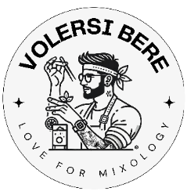

WINTER EDITION
DRINK LIST

Scopri il piacere di un drink artigianale, preparato con passione e cura.
KARMA (MUST-HAVE)
€9.00
▼
- Ingredienti:Rum sailor jerry, grand marnier, cannella, oli essenziali arancia.
- Immagina di sorseggiare un cocktail che non è solo una bevanda, ma un’esperienza unica. Il nostro KARMA è una combinazione perfetta di ingredienti corposi e di alta qualità, pensato per offrire un equilibrio straordinario tra dolcezza, corposità e una leggera nota alcolica che stimola il palato. Ogni ingrediente è selezionato per esaltare il sapore principale, creando una sinfonia di gusti che si sposano armoniosamente. È il cocktail ideale per una serata speciale, perfetto per rilassarsi, socializzare o semplicemente per godersi un momento di puro piacere. Non è solo un drink, è il modo migliore per concedersi un attimo di raffinatezza e dolcezza.
VENERE
€9.00
▼
- Ingredienti:vodka al lampone, Creme de cacao, home-mix Lampone & Cioccolato.
- Immagina di sorseggiare un drink che unisce l'intensità e la profondità del cioccolato fondente con la freschezza vibrante dei lamponi freschi, in un connubio irresistibile e sofisticato. Il nostro VENERE è un'esperienza sensoriale unica, perfetta per chi cerca qualcosa di originale e raffinato, poche parole, unico.
L’APERITIVO FIZZ
€9.00
▼
- Ingredienti:Gin Bulldog London dry, Campari, limone, zucchero, soda, arancia.
- Immagina un drink che mescola l'eleganza e la freschezza del classico Gin Fizz con un tocco di audace intensità, portato dall'inconfondibile carattere del Campari. Il nostro APERITIVO FIZZ è un cocktail che sa come sorprendere e affascinare, un equilibrio perfetto tra la leggera effervescenza e il sapore deciso.
La base di questo cocktail è un gin di qualità, che si unisce a una spruzzata di succo di limone fresco, regalando un'esplosione di freschezza. La classica miscela di gin, zucchero e soda viene arricchita dalla presenza del Campari, che aggiunge un intrigante contrasto amaro e aromatico. La leggera amarezza del Campari si sposa perfettamente con la vivacità del gin, creando una combinazione armoniosa che stimola il palato.
Servito in un bicchiere alto, il drink è impreziosito dalla sua effervescenza e da un elegante strato di schiuma soffice, che invita a prendere il primo sorso. La soda frizzante dona leggerezza e una piacevole sensazione di freschezza, mentre l'aggiunta di Campari offre una nota complessa che rende il cocktail intrigante e mai scontato.
SMOKY MIRAGE (MUST-HAVE)
€10.00
▼
- Ingredienti:Mezcal Montelobos, Bulleit bourbon whiskey, limone, zucchero, foamer, aromatic bitter.
- Immagina un drink che fonde l'affumicato e misterioso carattere del mezcal con la ricchezza e la morbidezza del bourbon, creando un'esperienza sensoriale unica e sorprendente. Lo SMOKY MIRAGE è un cocktail che riscrive le regole del classico, con un audace twist che conquista fin dal primo sorso.
La base del drink è una combinazione di mezcal e bourbon, che si incontrano in perfetto equilibrio. Il mezcal, con il suo inconfondibile aroma affumicato, dona una profondità intrigante, mentre il bourbon aggiunge una nota calda e dolce, con il suo carattere vanigliato e speziato. Un tocco di zucchero di canna e qualche goccia di bitter arricchiscono ulteriormente la bevanda, accentuando la sua complessità.
E tu? Pensi di meritarlo? Per pochi.
VERMOUTH NOIR
€10.00
▼
- Ingredienti: Kahlua coffee liqueur, Vermouth del professore rosso, caffè espresso dolcificato, essenza di arancia.
- Un drink che unisce la profondità e l'intensità del caffè con la sofisticata complessità del vermouth, creando un'esperienza unica per i sensi. Il VERMOUTH NOIR è un cocktail che saprà sorprendere per il suo contrasto inaspettato, ma perfettamente equilibrato.
La base di questo drink è costituita da una miscela di caffè espresso forte e aromatico, che dona un'intensità inconfondibile, mentre il vermouth – scelto tra una versione rosso amaro o bianco più secco – aggiunge note aromatiche e speziate che si fondono armoniosamente con il caffè. Il vermouth bilancia la robustezza del caffè con le sue sfumature erbacee e un pizzico di dolcezza, creando un equilibrio sorprendente tra il caldo e l'amaro.
Il drink viene servito senza ghiaccio, con una spolverata di cacao o una scorza di arancia come guarnizione per aggiungere un ulteriore strato di freschezza e aromaticità. Ogni sorso regala una sensazione di contrasto: l'amarezza del caffè si integra con la dolcezza e l’aromaticità del vermouth, creando un cocktail ricco e avvolgente.Nessuna scusa, pochi come lui.
"I grandi Classici"
€7.00/€8.00
▼